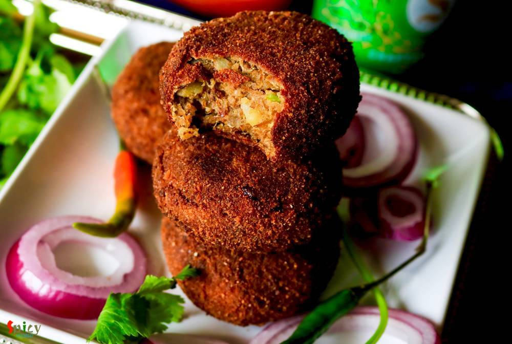
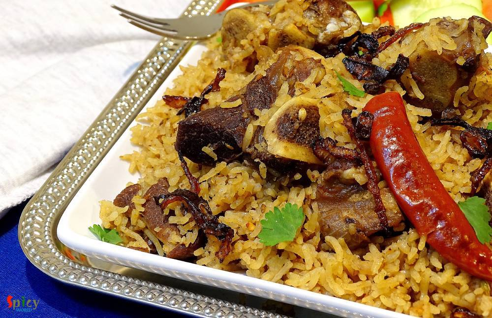

Simple and Easy Recipes

Posts on 'mutton'

Nonveg Recipe
Feb 14, 2019
Mutton korma is an old school and popular non veg main course item from Old Delhi. Any korma recipe has onion and yogurt based sauce, some even add nut paste also. Last weekend I had a party in my house. Among all the foods, the main attraction was Mutton Korma. Korma is very rich itself. Always serve this with light rice item or naan. Do give it a try and let me know how it turned out for you.


Nonveg Recipe
Jan 31, 2019
Mughlai Keema Paratha is a very famous street food which has another name Keema Baida Roti. In Kolkata we call them 'moglai porota'. I made these parathas exactly like street style with minced meat, but you can skip that Keema part and keep the rest of the recipe same. The process is a bit lengthy but it is worth trying. I made dry potato curry along with mughlai paratha because these two goes ver ...

Nonveg Recipe
Jan 17, 2019
Sunday mutton curry is a super easy, fuss free goat meat recipe which goes best with plain rice. This mutton curry is my family favorite and almost every sunday they demand to have it on lunch. And in the evening, my husband silently ask me is there any left over from lunch so that we can have it with roti at dinner? Yes, this sunday mutton curry is really close to our heart and we love it to the ...

Nonveg Recipe
Dec 19, 2018
Mutton Handi is a delicious goat meat curry which has a scrumptious gravy and goes best with plain chapati, butter naan or pulao. Handi means clay pot. Usually mutton handi is cooked in clay pots, that's where the name came from. But I didn't have one, so cooked in my regular vessel. The taste was out of the world, soft pieces of slow cooked mutton literally stole my heart. If you are a mutton lov ...

Nonveg Recipe
Nov 13, 2018
In India many dhabas and restaurants sell Keema Masala which is minced mutton curry. Keema means mince. This is a delicious non veg gravy which goes best with plain chapati or naan. In Keema Masala, minced mutton will be cooked in a onion tomato based sauce along with some flavorful spices and lots of fresh green chilies and coriander leaves. Try this recipe in your kitchen and enjoy a wonderful d ...

Nonveg Recipe
Oct 21, 2018
Rajasthan is a state of India which is situated at the western part. In childhood I went there with my family on vacation, though I remember nothing much except our album photos. Rajasthan is the land of kings and 'laal maas', which is hot and spicy red colored mutton curry, is their well known dish. The dish is everything about color and flavors. They cook the mutton in a yogurt and onion based s ...

Nonveg Recipe
Oct 2, 2018
Mutton Kosha is a Bengali delicacy which can be served with plain rice / basonti pulao / luchi. Mutton kosha requires patience, kosha means slow cooking in oil and spices. Off course to hurry up the process you can use pressure cooker, but slow cooking is recommended and this mutton curry like any other curry tastes better on next day. We have one more variance of the Mutton Curry called Kosha Man ...

Nonveg Recipe
May 23, 2016
Last week I was thinking that my blog doesn't have the recipe of 'mangsher ghugni' and being a Bengali I felt very awkward. There is no Bengali in the world who doesn't know about this dish ... yes, 'mutton ghugni' is that much famous. On special occasions or guest's arrival in evening, 'mangsher ghugni' is a very common item we Bengalis make. It's a Indian version of 'chili'. We make the curry of ...

Nonveg Recipe
Aug 25, 2016
We all love to eat food from Dhaba (road side food joint) while traveling. Nowadays you can find many fake dhabas and taste of their food is also fake, nowhere close to the authentic ones. Luckily few old and original dhabas in India still sells the best meals. After tasting those foods, you will probably think that their cooks must have some kind of magical hands. I once tasted their 'mutton curr ...

Nonveg Recipe
Jul 18, 2018
This dish was invented in dhabas from Himachal Pradesh. Nowadays it is available in almost every dhaba and restaurant. Its a very different recipe as it requires mutton pieces along with some minced mutton. Can you imagine that whenever you will scoop up some gravy with naan or roti there will be loads of Keema .... how delicious that sounds ! This dish goes best with Biriyani, Pulao and Butter na ...

Nonveg Recipe
Jun 25, 2018
This green chili mutton has become very popular nowadays in Bengali restaurants in Kolkata. They make this dish with chicken also. After reading the ingredients you will wonder why spinach leaves? 6 blanched spinach leaves wont spoil the taste, rather it will give the curry a nice green color. Heat will only come from green chilies that's why there is no use of dry red chilies in this recipe. It's ...

Nonveg Recipe
Aug 8, 2016
We both adore almost any type of mutton curry. I think, once in a week, mutton curry is must for every Bengali households. I made this curry with some plain roti / chapati in dinner last month, just didn't get time to post. Now finally I am sharing this yummy recipe with you all. If you love the strong flavour of black pepper, then believe me, 'morich mangsho' is worth giving a try. I am sure your ...

Nonveg Recipe
Aug 16, 2016
Yesterday I experienced the worst ... my camera's memory card got corrupted and I lost more than half pictures of this recipe. We tried very hard to recover those photos but no luck!! It was nobody's fault, it's just that the tiny little piece of 'card' betrayed me ??? very harshly .. and I felt tremendously helpless towards 'technology'. Now you guys know why there is no step by step pictures ...

Nonveg Recipe
Jul 20, 2016
Pakistani cuisine is full of delicious surprises. Their cuisine is lot more than just kababs and biriyani. I was searching for a different 'goat meat' recipe and suddenly came across with this delicious 'peshawari mutton' recipe. Don't know whether the cooking process is authentic or not, but I really fell for its simplicity. This dish doesn't require too many ingredients even though surprisingly ...

Nonveg Recipe
Jun 22, 2016
'Keema Aloo' is my favourite curry when it comes to a fuss free but yummy dinner. It's so rich and spicy that there is no other meat curry which you can make in such a less time. I used mutton keema but feel free to use chicken mince. After adding the cubed potatoes, this dish becomes a killer ! Serve this with plain rice or paratha, every time 'keema aloo' will be a hit. It is also a very good ma ...
")
Nonveg Recipe
Jun 14, 2016
Who doesn't crave for yummy snacks in the evening with some cold drinks during summer ?? I guess everybody does. Summer or winter doesn't matter ... weekend evenings are meant for some awesome starters ! After few trials I finally created the exact taste of Kolkata's one of the famous street food - 'kobiraji cutlet'. Kobiraji means coverage or lace like texture, which you can create with beaten eg ...
")
Nonveg Recipe
Mar 30, 2016
Mutton rogan josh is the signature dish of the Kashmiri cuisine which was bought by Mughals. 'Rogan' means oil / fat and 'josh' means intense heat. The dish is an aromatic mutton curry which is cooked in oil on high flame. It is slightly different than the usual mutton curries because of the usage of some unique dry seasonings. Rogan josh can be prepared in two ways - one with onion and garlic, th ...

Nonveg Recipe
May 16, 2016
This is a very popular dish from Mughlai cuisine in India. In this recipe medium size mutton pieces are cooked in a white, creamy, nut based rich gravy. 'Rezala' goes best with naan, biriyani, roti or paratha. I have already posted several recipe on 'rezala'. The dish has a very unique taste. It is neither very spicy nor very sweet. I made this last week and thoroughly enjoyed it with plain rice. ...

Nonveg Recipe
Apr 18, 2016
The name sounds odd ? Well, I am not crazy, we call this mutton curry vegetarian because it has no onion and garlic. The food we usually offer to our god / godess is called 'bhog' which never contains onion and garlic. During 'kalipuja' or diwali, we Bengalis make this vegetarian mutton curry with the meat of 'pathaboli' (ritual). The taste of this curry is suprisingly delicious, even if there is ...

Nonveg Recipe
Feb 19, 2016
A good Indian maincourse dish is always paired well with various types of pulao or many types of bread. But sometimes pulao itself can become a very rich and heavy dish. Yes, I am talking about 'mutton pulao'. In this recipe, the rice will be cooked with the tasty mutton stock (yakhni). That is why this type of pulao become rich itself. We both are very much fond of 'yakhni pulao'. You just have t ...

Nonveg Recipe
Mar 31, 2016
In India "biriyani" is a very popular dish and we both are crazy about any type of 'biriyani'. You can find plenty of variations in biriyani. The process is a little bit of lengthy but the result is unbelievable. Last friday I took an attempt on making Keema Biriyani, after the entire process I realized it is the easiest one. That is why I am sharing this recipe with you because it is one of the t ...

Nonveg Recipe
Mar 28, 2016
Obviously they are not our regular 'aloor chop' / aloo tikki, they are something very special, aloo tikkis are stuffed with spicy minced meat, a little different from usual, but they tastes million bucks !! We Bengalis generally eat 'aloor chop' with puffed rice or tea whereas in other parts of India 'aloo tikki' is always served with chutneys. I will recommend you the second one for these stuffed ...

Nonveg Recipe
Mar 4, 2015
Traditional Bengali lunch on sunday is this mutton curry along with plain rice, raw onion chunks and green chilies. After lunch we need a long nap (bhaat ghum). There was a say that we Bengalis can not eat food without potato. This is true. You have to add potatoes to this dish because there are many people like me and my husband who likes potatoes more than mutton pieces specially in this curry. ...
 / Kosha Mangsho (Thakurbari style)")
Nonveg Recipe
Jan 26, 2016
'Thakurbari' means Rabindranath Tagore's home, which is situated at Jorashanko, Kolkata. Tagore's family is popular for many things and one of them is 'cooking'. Nowadays, you can watch plenty of cooking programmes in TV, but when I was in school, only few magazines used to publish cooking recipes on weekends only. The craze was also different in that time. I still can remember how my mom and gran ...

Nonveg Recipe
Jan 20, 2016
Few days before I saw a fantastic picture of mutton curry in facebook. The caption was 'adabata aar kacha lonka diye mutton'. After seeing that picture, I decided to make it on dinner with some steamed rice. As the picture didn't provide the detailed recipe, except ginger and green chilies, I followed my own instinct while making the curry. After finishing, I got a thin, flavorful, tasty gravy and ...

Nonveg Recipe
Dec 23, 2015
'Dakbanglow' means roadside resting house. Travelers used to take rest or halt for a night in those houses. The care taker of those 'bunglow's cooked this curry for their guests. Nowadays these kind of recipes are almost lost but in a few restaurants in Kolkata you can still find this dish. This is a typical bengali recipe and the tastiest dish ever. Once I ate this curry in my aunt's house and I ...

Nonveg Recipe
Dec 19, 2015
You always have a grand feeling whenever you prnounce the name 'mutton biriyani'. I mean really I need to describe this? It become the most popular indian dish among the world. Biriyani has its own aroma, juicy meat and long grain flavourful rice. But in Kolkata they add boiled potato and egg in their biriyani which makes you more greedy:-) I know that the process is lenthy but believe me you will ...

Nonveg Recipe
Dec 14, 2015
Whenever 'he' returns from market and gives me a bag of mutton, it always brings an extra big smile on my face and a great joy in my heart. I guess, this happens to many of you also ?. I always try to do something new to my mutton curry, because you all know about my experimental nature!! This time I made 'khara masala mutton', the taste was heavenly. After finishing the meal, there were nothing ...

Nonveg Recipe
Dec 13, 2015
In India, 'mutton dopyaza' is a very frequently ordered dish in restaurants. 'Dopyaza' means double amount of onion. From this curry you will get juicy meat, thick gravy and some nice crunch of onions. You can make this curry with chicken and fish also. If you make this dish in any potluck or party, it will become the main attraction. I tried to keep the recipe very simple and easy. Just give it a ...

Nonveg Recipe
Oct 20, 2015
During summer we generally avoid to eat rich food. But when it comes to mutton, the decision become difficult ?. For this kind of situation 'mutton stew' is the perfect food for all. The recipe is very simple and have some mild flavours. You will love this when you make it.
")
Nonveg Recipe
Oct 15, 2015
In India 'dhaba' means roadside food joints. They offer delicious and spicy meals. Among all of their meals, 'tarka-roti' is the famous one. I once ate 'Mutton Tarka' from them and it was super tasty. Last week I try this tarka recipe and reveal that it tastes exactly like 'dhaba tarka'. Just follow the recipe and impress your family.
Contact Us
Guest Post
Subscribe RSS Feed
User Agreement
Public Presence
Feedback
Free Games
Home
Recipes
Categories
Images
Food Plating
About Me
Guest Post
Subscribe RSS Feed
User Agreement
Public Presence
Feedback
Free Games
Home
Recipes
Categories
Images
Food Plating
About Me
What we offer?
- Recipe Development
- Restaurant & Food Review
- Food Photography
- Website, Blog & Application Development
- UX / UI Designing
- Sponsorship & Advertisement
Contact us via Email
contact@spicyworld.in
Who we Are?


Amitava Ghosh
Website & CMS Designer, Developer and Architect.
Website & CMS Designer, Developer and Architect.